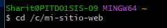
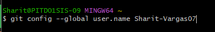
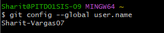
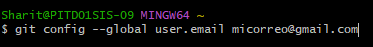
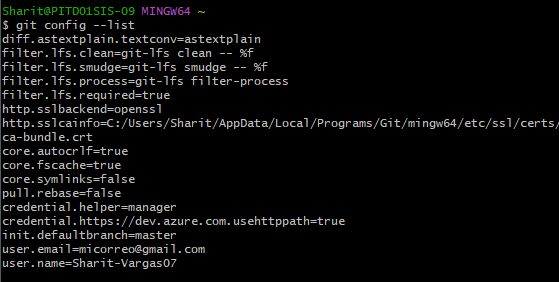
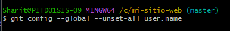
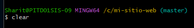
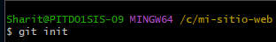
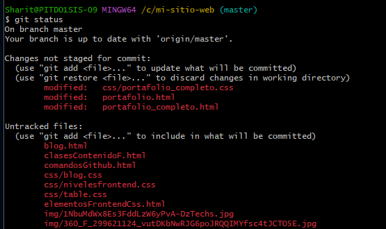

| 1 |
cd ruta/de/tu/carpeta/ |
Ingresar al directorio |
 |
| 2 |
git config --global user.name (nombre de usuario) |
Establecer nombre de usuario que se utilizará para subir cambios |
 |
| 3 |
git config --global user.name |
Verificar nombre de usuario que se utilizará para subir cambios |
 |
| 4 |
git config --global user.email (correo electronico) |
Establecer correo electronico del usuario que se utilizará para subir cambios |
 |
| 5 |
git config --global user.email |
Verificar correo electronico del usuario que se utilizará para subir cambios |
|
| 6 |
git config --list |
Verificar correo electronico y usuario que se utilizará para subir cambios |
 |
| 7 |
git config --global --unset-all user.name |
Resetear usuario que se utilizará para subir cambios |
 |
| 8 |
clear |
Limpiar pantalla |
 |
| 9 |
git init |
Inicializar repositorio |
 |
| 10 |
git status |
Ver esdo del repositorio |
 |